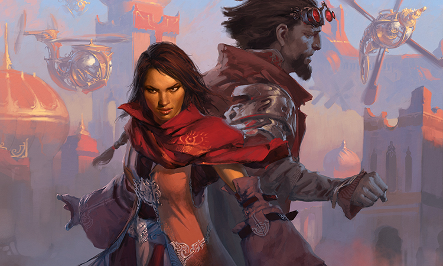
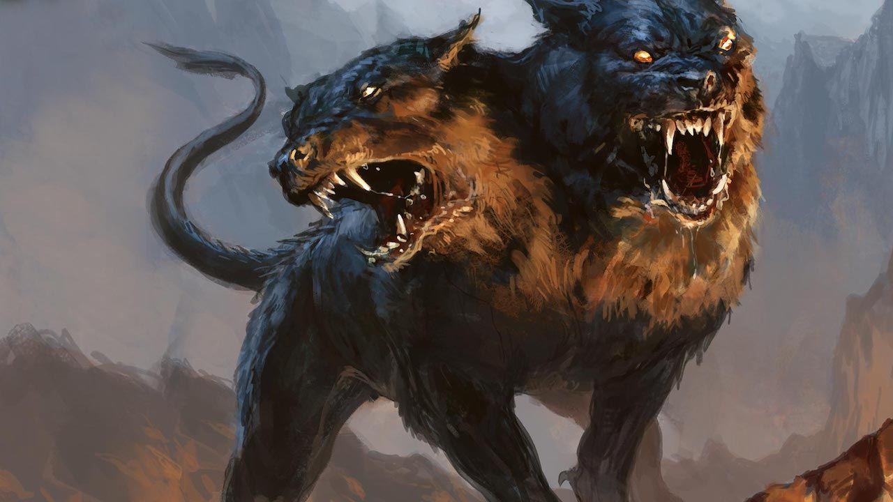
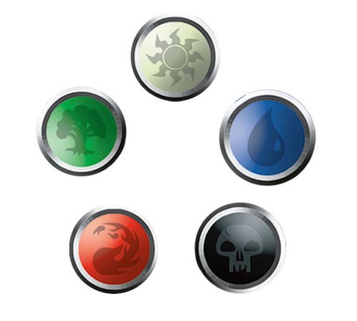

8 marca 2018
Po jednym z wcześniejszych wpisów zostałem poproszony o napisanie kilku słów na temat towarzyskiego medżika rozgrywanego w więcej niż standardowe dwie osoby. Zacznijmy od tego, że wariantów gry w Magic: the Gathering jest w zasadzie nieograniczona liczba. Przez 25 lat istnienia karcianki powstało mnóstwo jej odmian różniących się liczbą graczy, dozwoloną pulą kart czy też sposobem konstruowania talii.

Najpopularniejsze formaty, to oczywiście te sankcjonowane przez producenta, w których rozgrywane są oficjalne turnieje. I tu rozgrywanym najpowszechniej jest opisywany przez mnie już kiedyś draft. Przypomnijmy, że jest to turniej typu limited, w którym gracze otwierają nowe paczki z kartami i przekazując je sobie w kółko, dobierają po jednej tak, żeby skonstruować grywalną talię.
Jak zatem zaadaptować tradycyjny draft do grania przy chipsach i coli? Po pierwsze będziemy potrzebować parzystą liczbę graczy, najlepiej w liczbie co najmniej czterech. Naturalnie, nieparzyście też da się grać, ale wtedy jedna osoba będzie „nicnierobić”, podczas gdy pozostali grają mecz. Do pełni casualowatości brakuje nam jeszcze odpowiednich kart. Oczywiście nic nie stoi na przeszkodzie, by za każdym razem otwierać z kumplami nowe boostery, ale to dość kosztowne rozwiązanie. Zamiast tego, polecam zebrać posiadane karty i samodzielnie podzielić je na paczki składające się z jednego (mythic) rare'a, trzech uncommonów i dziesięciu commonów. Takich zestawów będziemy potrzebować po trzy na każdego gracza. Dalej postępujemy już jak przy tradycyjnym drafcie.

Innym typem rozgrywki multiplayer, oficjalnie wspieranym przez Wizardsów jest 2HG - Two-Headed Giant, przewidziany dla czterech graczy. Etap tworzenia talii jest identyczny jak w turniejowym medżiku. Do dwugłowego giganta można zaadaptować dowolne talie constructed (standard, modern lub legacy), limited (powstałe z draftu lub sealed decka), albo też dowolny inna casualowy deck. Ważne jedynie, by wszyscy czterej gracze posiadali talie złożone według tych samych zasad. Istotna różnica pojawia się natomiast w sposobie rozgrywki. Gracze dzielą się na dwie dwuosobowe drużyny, w obrębie której mogą dowolnie się konsultować, oglądać nawzajem swoje karty, wspólnie podejmować decyzje. Każdy team rozgrywa swoją turę wspólnie: gracze równocześnie dobierają karty, razem atakują i blokują. Mają też wspólne życie, ale w odróżnieniu od tradycyjnej rozgrywki jest to 30 punktów. Życie jest jedynym dzielonym zasobem, co oznacza na przykład, że gracz A nie może użyczyć many ze swoich lądów po to, by gracz B z tej samej drużyny mógł zapłacić za zagranie czaru.
Kolejny dość popularny format wieloosobowego MtG to free-for-all (zwany też "circle"). Nie jest oficjalnie wspierany w rozgrywkach typu competitive, aczkolwiek pełne reguły gry w Magica (kilkusetstronicowa wyrocznia zwana "Comprehensive Rules") zawiera odpowiedni rozdział opisujący ten tryb. Gracze siadają przy stole, losują, kto zaczyna, i rozgrywają swoje tury zgodnie z ruchem wskazówek zegara. Przed rozpoczęciem należy jedynie ustalić między sobą dozwolony sposób atakowania przeciwników. Do wyboru mamy: tylko gracza po lewej stronie, tylko gracza po prawej stronie oraz typowe free-for-all, czyli w obrębie jednej fazy ataku możemy wysłać swe stwory do kilku dowolnych graczy, niekoniecznie siedzących obok nas. Oczywiście, aby wyrównać szanse, należy zadbać o to, żeby talie wszystkich uczestników prezentowały podobny power-level. Grę wygrywa "last man standing", ewentualnie gracz, któremu uda się zagrać kartę jednoznacznie mówiącą "wygrywasz grę".
Wariantem free-for-all jest format zwany "star" lub "pentagram". Przeznaczony jest dla pięciu graczy, a każdy z nich musi posiadać talię w innym kolorze: białym, niebieskim, czarnym, czerwonym i zielonym. Karty wielokolorowe, jak również lądy produkujące inny kolor many, są zabronione. Tutaj jeszcze, muszę wtrącić kilka słów o pentagramie kolorów, który widnieje na rewersie każdej karty Magic: the Gathering. Jak widać na załączonej grafice, każdy kolor ma dwa sąsiadujące i dwa przeciwne. Przykładowo biały jest pomiędzy zielonym a niebieskim - i te kolory uznawane są za sprzymierzone. Czarny i czerwony natomiast, leżące naprzeciw, to kolory wrogie.

W pentagramie gracze siadają w kolejności pentagramu kolorów medżikowych. Zwycięstwo odnosi gracz, którego wrogie kolory odpadną z gry: biały gracz wygrywa mecz, jeśli pokonani zostaną czarny i czerwony; niebieski, jeśli czerwony i zielony; i tak dalej. Warto odnotować, że każdy gracz może atakować każdego, zagrywać czary wspomagające bądź szkodzące dowolnemu uczestnikowi rozgrywki. Jednak naturalnie będziemy starali się wspomagać graczy obok nas a szkodzić tym naprzeciwko.
Na zakończenie dodam jeszcze, że raz na jakiś czas Wizards of the Coast wypuszcza specjalne zestawy kart zaprojektowane z myślą o wieloosobowej towarzyskiej rozgrywce. W ten sposób dorobiliśmy się Planechase'a, Archenemy oraz Commandera. Ale to już temat na kolejny artykuł.